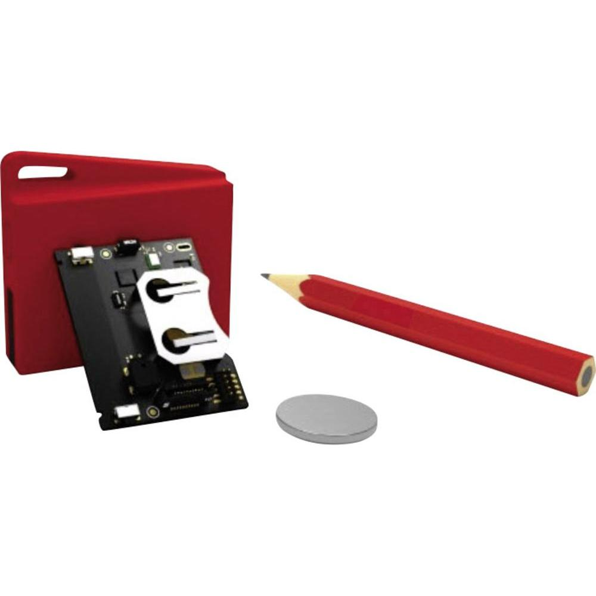

CC2650 SensorTag¶
Overview¶
The SimpleLink CC2650 SensorTag is a Texas Instruments board based on the CC2650 wireless MCU. It contains multiple sensors and provides Bluetooth and IEEE 802.15.4 connectivity.
{kind=link}
Features¶
- CC2650 low-power wireless MCU: Bluetooth + IEEE 802.15.4 connectivity
- Autonomous low-power sensor controller
- Autonomous radio controller
- Program, debug, and serial line through “DevPack” JTAG probe’s USB port
- Power from DevPack USB or batteries
- 2 buttons and 2 LEDs for user interaction
Hardware¶
The SensorTag board provides the following hardware:
- CC2650 SoC in RGZ (7x7mm) 48 pins format package
- Programmable Cortex-M3 CPU, clocked at 48MHz
- Proprietary sensor controller
- 12-bit ADC, 200ks/s
- 2 comparators
- SPI + I2C digital interfaces for sensors
- Programmable with register-based interface
- Cortex-M0 “RF Core” radio controller
- 4KB of dedicated SRAM
- Single transceiver, with modem and frequency synthesizer
- Programmable with register-based interface
- 128KB flash
- 20KB SRAM
- 8KB cache
- SPI
- I2C
- I2S
- UART
- 31 GPIOs
- 4 32-bit timers
- True Random Number Generator
- Real Time Clock
- Watchdog timer
- 32 channels DMA controller
- 10 sensors: ambient light, digital microphone, magnetic sensor, humidity, pressure, accelerometer, gyroscope, magnetometer, object temperature and ambient temperature
Supported features¶
The following SensorTag features are currently supported:
| Interface | Controller | Driver/Component |
|---|---|---|
| NVIC | on-chip | Nested Vector Interrupt Controller |
| UART | on-chip | serial port polling |
| GPIO | on-chip | gpio |
| PINMUX | on-chip | pinmux |
Connections and IOs¶
The SensorTag has one GPIO controller, along with a flexible pin
multiplexer. In practice, the pins are routed as described in
boards/arm/cc2650_sensortag/board.h; the most commonly used being:
| Physical pin # | Digital I/O # | Signal |
|---|---|---|
| 5 | DIO_0 | BUTTON_2 (right) |
| 9 | DIO_4 | BUTTON_1 (left) |
| 10 | DIO_5 | SDA |
| 11 | DIO_6 | SCL |
| 16 | DIO_10 | LED_1 (red) |
| 21 | DIO_15 | LED_2 (green) |
| 27 | DIO_17 | SCLK |
| 28 | DIO_18 | MISO |
| 29 | DIO_19 | MOSI |
| 31 | DIO_21 | BUZZER |
| 41 | DIO_28 | UART_RX |
| 42 | DIO_29 | UART_TX |
System Clock¶
The CC2650 clocks its Cortex-M3 CPU through a 48MHz internal oscillator by default. 2 system clocks, a high-frequency one and a low-frequency one, are available to clock the CPU and the peripherals. Available clock sources for them are:
- 48MHz internal oscillator
- 24MHz internal oscillator
- 32KHz internal oscillator
- 32.768KHz external oscillator
Programming and debugging¶
The ROM in the CC2650 contains a proprietary bootloader, executed
before the program stored on flash. The bootloader looks at a special
configuration area expected to be written at the end of flash, the
CCFG (“Customer Configuration” area). A 32-bit word in this area,
IMAGE_VALID_CONF, needs to be 0 in order for the bootloader to actually
pass control to your program. You can find more information on the CCFG
in the CC2650 reference manual, section 9.1. The current CC2650 port
for Zephyr already does this by default; if you wish to check or modify
the CCFG content, see arch/arm/soc/ti_simplelink/cc2650/soc.c.
Building¶
You can build an application in the usual way. Here is an example for the Hello World application.
$ cd $ZEPHYR_BASE/samples/hello_world
# Make a build directory, and use cmake to configure a Make-based build system:
$ mkdir build && cd build
$ cmake -DBOARD=cc2650_sensortag ..
# Now run make on the generated build system:
$ make
$ make flash
Flashing¶
The CC2650 SensorTag can be flashed using a XDS110 JTAG device, the “DevPack”, designed to plug on it. For now, flashing with it is not supported within Zephyr. However, you can use Uniflash, a TI proprietary tool, to do the job for now.
Note
Uniflash comes with some firmware for the “DevPeck” XDS110 JTAG probe. Different versions of Uniflash may have different firmware version. Currently, the most stable version is the 3.4. You should be able to grab it here: http://processors.wiki.ti.com/index.php/CCS_UniFlash_v3.4.1_Release_Notes
To update the “DevPack”, reach the installation path of Uniflash 3.4,
then to the ccs_base/common/uscif/xds110/ subdirectory.
Then follow the ReadMe.txt’s instructions:
$ ./xdsdfu -m
$ ./xdsdfu -f firmware.bin -r
The green LED of the “DevPack” should blink repeatedly during the operation, then light up again upon completion.
Debugging¶
Debugging can be done with OpenOCD 0.10, which is supported by the Zephyr SDK since v0.9.2. A basic configuration file for the SensorTag board would be:
source [find interface/cmsis-dap.cfg]
transport select jtag
gdb_memory_map enable
gdb_flash_program enable
source [find target/cc26xx.cfg]
adapter_khz 5000
Copy this in a file named ti-sensortag.cfg, located in the
scripts/board subdirectory of your local OpenOCD installation path.
When you wish to launch the OpenOCD server, just type:
$ openocd -f board/ti-sensortag.cfg
References¶
- TI CC2650 datasheet:
- http://www.ti.com/lit/ds/symlink/cc2650.pdf
- CC2650 reference manual:
- http://www.ti.com/lit/ug/swcu117g/swcu117g.pdf
- Uniflash 3.4 release notes:
- http://processors.wiki.ti.com/index.php/CCS_UniFlash_v3.4.1_Release_Notes